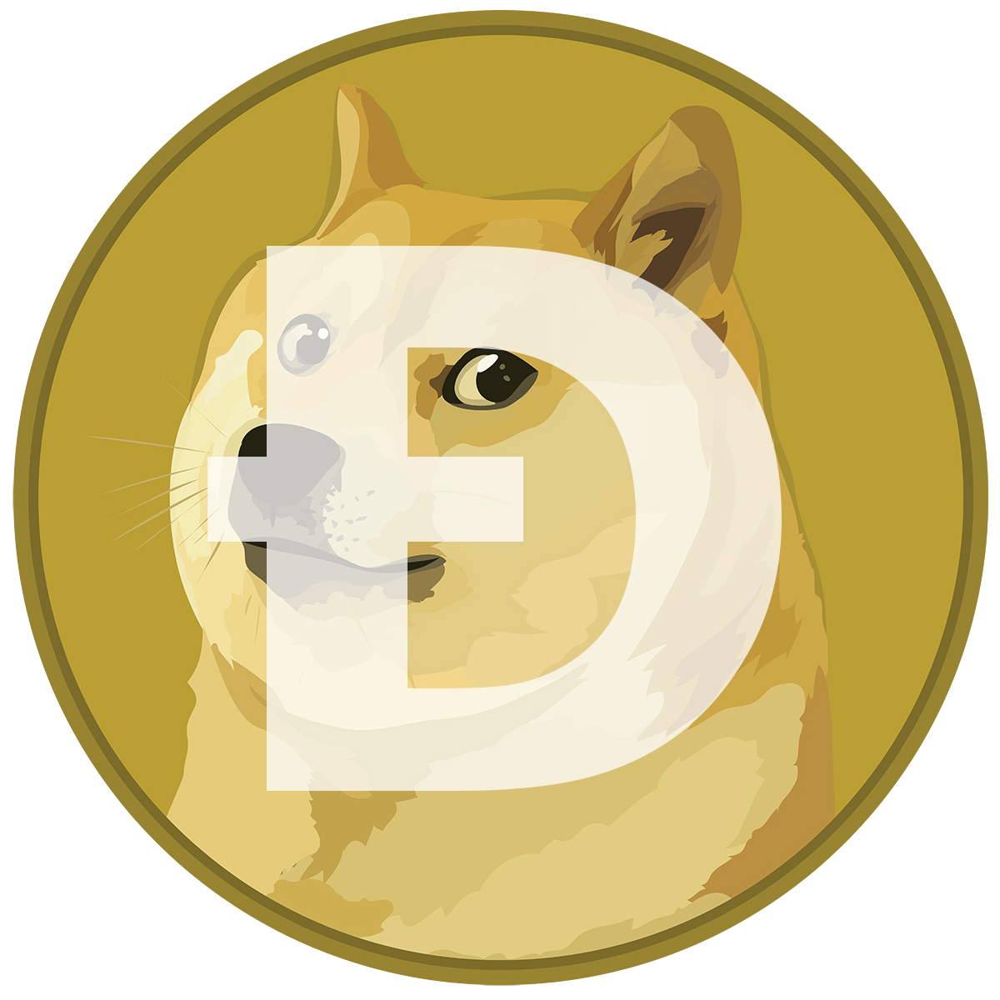

¿Qué son las criptomonedas?
Una criptomoneda es un activo digital que emplea un cifrado criptográfico para garantizar su titularidad y asegurar la integridad de las transacciones, y controlar la creación de unidades adicionales, es decir, evitar que alguien pueda hacer copias como haríamos, por ejemplo, con una foto. Estas monedas no existen de forma física: se almacenan en una cartera digital.
¿Cómo funcionan?
Las criptomonedas cuentan con diversas características diferenciadoras respecto a los sistemas tradicionales: no están reguladas ni controladas por ninguna institución y no requieren de intermediaros en las transacciones. Se usa una base de datos descentralizada, blockchain o registro contable compartido, para el control de estas transacciones. Al hilo de la regulación, las criptomonedas no tienen la consideración de medio de pago, no cuentan con el respaldo de un banco central u otras autoridades públicas y no están cubiertas por mecanismos de protección al cliente como el Fondo de Garantía de Depósitos o el Fondo de Garantía de Inversores. En cuanto a la operativa de estas monedas digitales, es muy importante recordar que una vez que se realiza la transacción con criptomonedas, es decir, cuando se compra o vende el activo digital, no es posible cancelar la operación porque el blockchain es un registro que no permite borrar datos. Para “revertir” una transacción es necesario ejecutar la contraria.
Origen
El origen de las Criptomonedas se remonta muchos años más atrás de lo que todos pensamos, el verdadero origen de las criptomonedas se remonta a la década de los 80, específicamente en el año 1983 cuando el criptógrafo estadounidense David Chaum desarrolló un primer sistema criptográfico denominado eCash. Fue concebido como una especie de dinero electrónico criptográfico anónimo o un sistema de efectivo electrónico. Y se utilizó como sistema de micropagos en un banco de EEUU de 1995 a 1998. En 1995, desarrolló un nuevo sistema llamado DigiCash, que utilizaba la criptografía para mantener confidenciales los datos de quienes realizaban las transacciones económicas. De hecho, se puede decir que así fue como nacieron las criptomonedas. Posteriormente en el año 1998 Wei Dai, ingeniero informático especialista en criptografía, hizo público un ensayo en el que presentó el concepto de “b-money“, un sistema de efectivo electrónico distribuido y anónimo. 10 años más tarde, en 2008, durante la gran crisis financiera mundial, una persona o un grupo de personas cuya verdadera identidad aún es desconocida se presentó con el seudónimo de Satoshi Nakamoto. Nakamoto, el 1 de noviembre, publicó un documento técnico de lo que llamó Bitcoin en el sitio web de la fundación P2P (Peer to Peer). En ‘Bitcoin: un sistema de efectivo electrónico de igual a igual’ puso de manifiesto su nueva visión del dinero electrónico.De esta manera, se presenta por primera vez el concepto de Bitcoin al mundo y es así como nacen las criptomonedas. Después, el 3 de enero de 2009 se da su nacimiento oficial cuando el primer Bitcoin sale a la luz como parte del primer bloque de 50 BTC llamado “Génesis”
Más Conocidas
En la actualidad existen miles y miles de criptomonedas, muchas desarrolladas y otras muchas más en desarrollo. A pesar de que existen una gran cantidad de criptos de todo tipo, no todas son mu conocidas, en esta sección hablaremos un poco de las más conocidas en la actualidad:
- 1. Bitcoin

- 2. Ethereum

- 3. Litecoin
- 4. Ripple
- 5. Bitcoincash

- 6. Dogecoin 
CONTÁCTANOS
Si deseas aportar más información sobre el mundo de las cryptos, sientete libre de hacerlo:
Maracaibo Venezuela